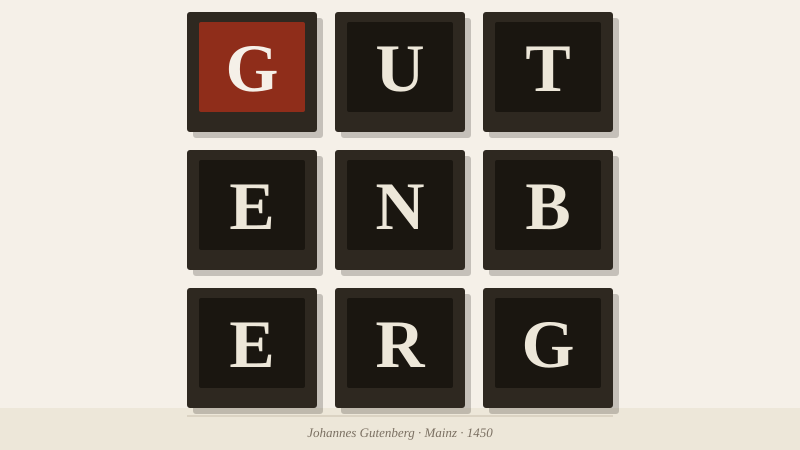

The Black Art
Gutenberg, movable type, and the invention that changed everything
In the winter of 1450, in a workshop on the Gutleutstrasse in Mainz, Johannes Gutenberg pressed damp paper against an arrangement of metal letters and produced something the world had never seen: a page that could be reproduced exactly, thousands of times, without a scribe's hand ever touching it.
The craftsmen who worked the early presses were called practitioners of the "black art" — partly because of the ink that stained their hands and aprons, and partly because what they did seemed, to those who watched it, like a kind of sorcery. Documents that had taken months to produce by hand could now be multiplied in days. The same text, set once in metal, could speak in a thousand voices simultaneously. The Church was uneasy. The scholars were intoxicated.
What Gutenberg actually invented was less a machine than a system. The screw press had existed for centuries, used to crush grapes and olives. The innovation was the type itself: individual metal letters, each cast to the same height and depth, that could be assembled into words, locked into a form, printed, and then broken apart to be reassembled into new words. The intelligence was in the interchangeability. This was, in the language of our own age, a modular system — a platform, not a product.
Type is not a neutral carrier of meaning; it is meaning's first impression of itself.
The typefaces of the early printers were designed to replicate the handwriting they replaced. Gutenberg's type was a near-perfect imitation of the Rhineland blackletter script used by the Mainz scribes. This tells us something important about how new technologies announce themselves: they begin by pretending to be the old thing. It took decades before printers began to design letters that could only be cast in metal — letters that took full advantage of the medium rather than merely imitating what came before.
That moment of liberation — when a technology stops copying its predecessor and starts being itself — is the inflection point in every medium's history. It is worth watching for it. We have not always been quick to recognize it when it arrives.
